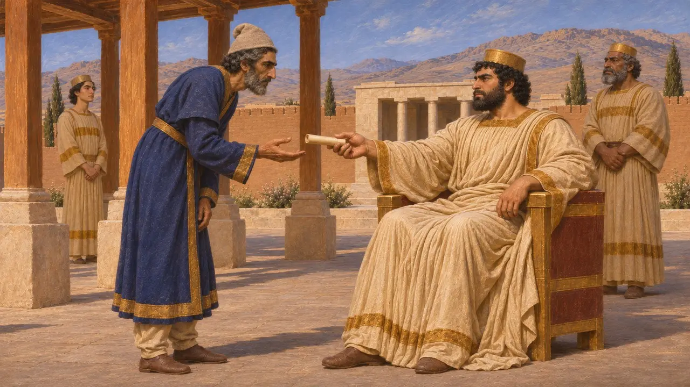
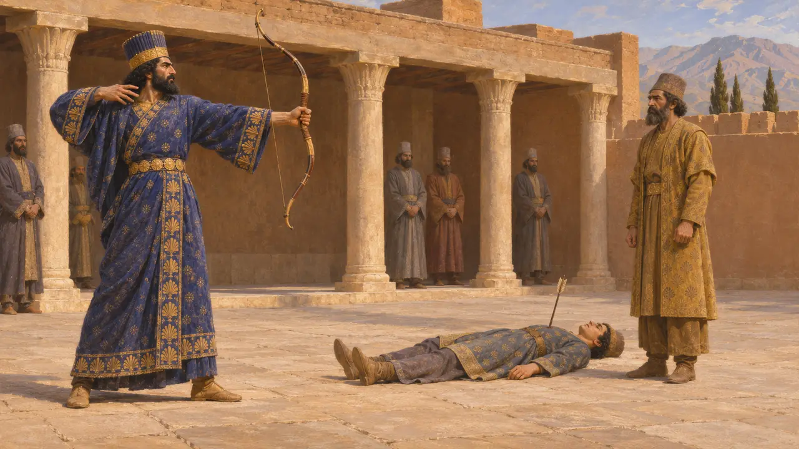
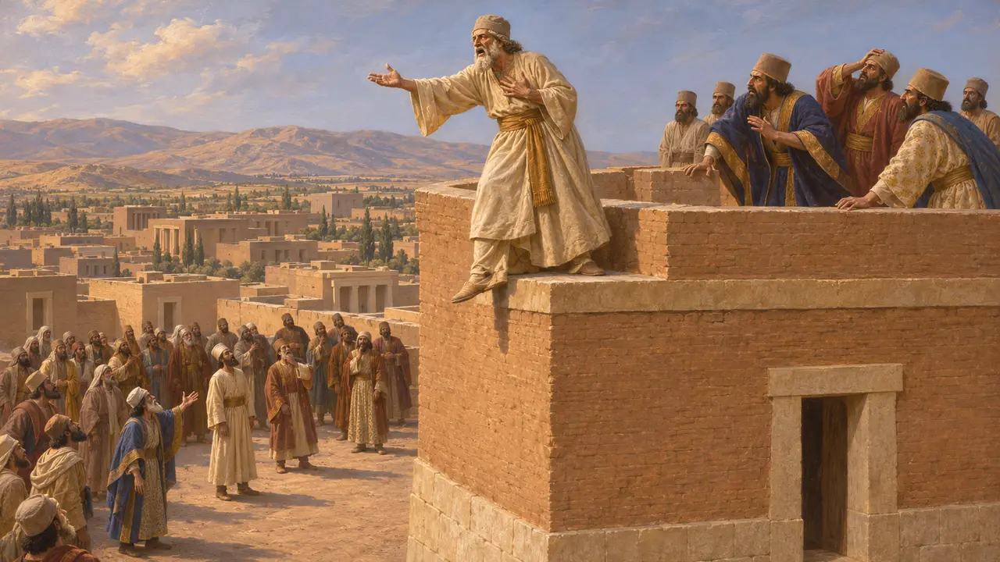
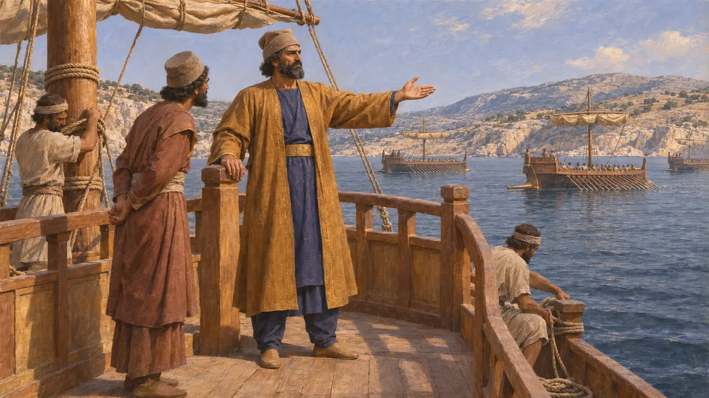

Prexaspes
Dois nobres persas com este nome em Heródoto, sob Cambises e Xerxes, 522-480 AEC
Heródoto usa o nome Prexaspes para dois homens. Um era servo de confiança de Cambises, envolvido na história da morte de Bardiya. O outro, filho de Aspatines, foi um dos quatro almirantes da frota de Xerxes em 480 AEC. Não se sabe se eram parentes.
No jogo: O jogo cita Prexaspes em verbetes da Crônica e em artigos de eventos, entre eles o verbete dos Almirantes, onde ele é um dos quatro almirantes da frota de Xerxes. Ele não tem figura nem mecânica próprias.

Confidente de Cambises
Relato antigoHeródoto descreve um Prexaspes que estava entre os homens de maior confiança de Cambises e levava as suas mensagens. A fonte é grega e foi escrita muito tempo depois dos acontecimentos.
Herodotus 3.30

O disparo contra o filho
Lenda posteriorHeródoto conta que Cambises, num acesso de loucura, atirou no filho de Prexaspes para mostrar que sua mão era firme. O relato é construído como uma lição sobre a crueldade de um rei e a resistência de um servo, e nenhum registro persa o confirma.
Herodotus 3.34-35
A morte de Bardiya
DisputadoHeródoto diz que Cambises enviou Prexaspes para matar seu irmão Bardiya, chamado de Esmérdis pelos gregos, e apresenta uma segunda versão de como a morte foi executada. A inscrição de Behistun, de Dario, diz apenas que Cambises matou Bardiya em segredo e não nomeia nenhum executor. Os historiadores, portanto, não podem afirmar se foi Prexaspes quem o fez, e alguns duvidam da história de Gaumata tal como Dario a apresentou.
Herodotus 3.30; DB §10

O discurso da torre
Lenda posteriorEm Heródoto, os conspiradores fizeram Prexaspes anunciar aos persas que o novo rei era de fato filho de Ciro. Em vez disso, ele confessou ter matado Bardiya e se lançou de uma torre. A cena se lê como um conto moral sobre a consciência de um servo.
Herodotus 3.74-75

Almirante da frota de Xerxes
Relato antigoHeródoto cita Prexaspes, filho de Aspatines, entre os quatro almirantes persas da frota de Xerxes em 480 AEC. Os outros que ele lista são Ariabignes, Aquêmenes e Megabazo. Um Aspatines é mencionado como portador do arco e do machado de Dario na inscrição DNd de Naqsh-e Rostam, de modo que o almirante pode ter vindo de uma família próxima ao trono, embora a ligação não seja certa. Os números de Heródoto sobre a frota são amplamente considerados exagerados.
Herodotus 7.97
Fontes
- Herodotus 7.97
- Herodotus 3.30
- Herodotus 3.74-75
- DB §10
- DNc
- P. Briant, From Cyrus to Alexander, 2002